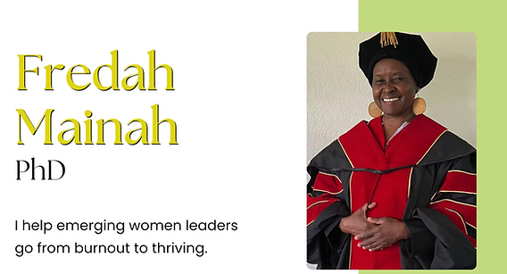
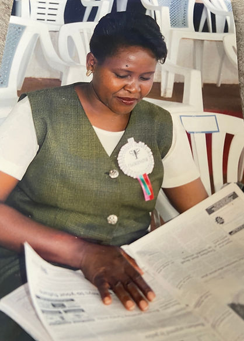
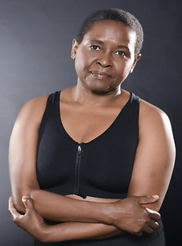
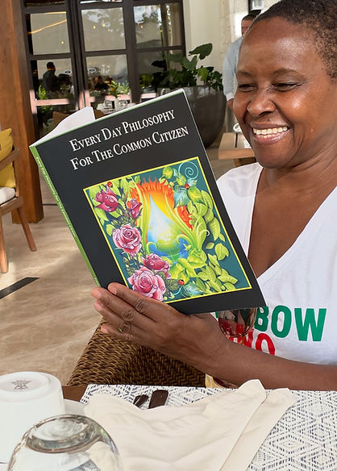
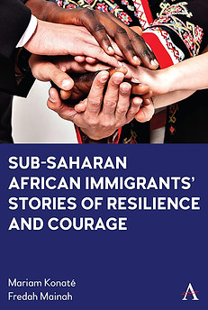
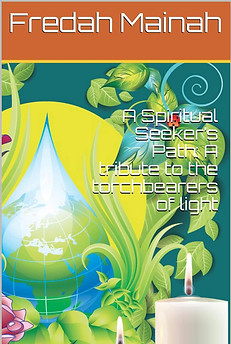
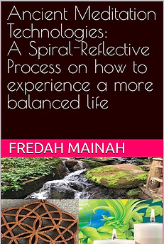
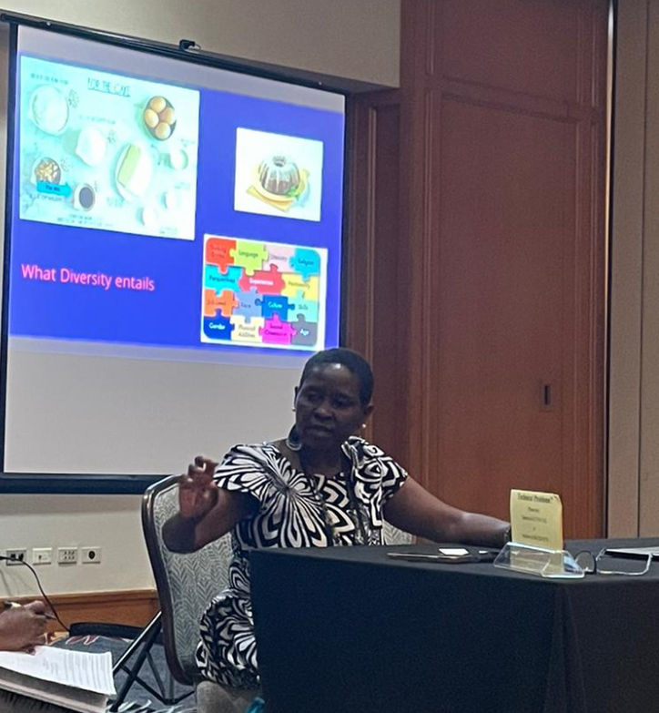
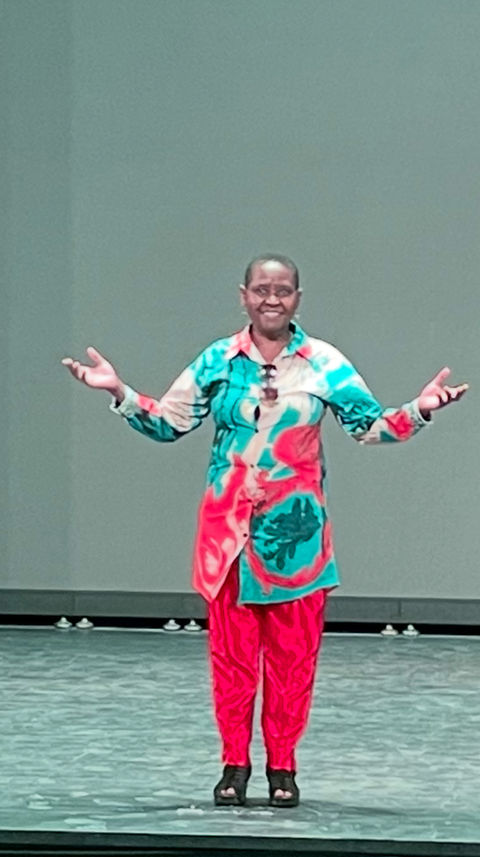

FREDAH MAINAH
Dedicated to helping emerging and established leaders reclaim their inner authority and lead themselves and others with clarity, courage, and conscious action.
Through NAICS 541611, 611430 among others I provide administrative and management consulting services for high-impact decision environments.
FREDAH MAINAH
At Rainbow-Ono Sanctuary (ROS) and SPIRAL With Fredah LLC, we believe that "No One Can Lead Your Life Better Than You".
Fredah Mainah, PhD, helps leaders make clearer decisions under pressure using the SPIRAL™ Framework. Book a keynote or start 1:1 self-leadership coaching with me today. I work at the level where leadership outcomes are actually formed — before execution, before visibility, before damage becomes obvious.
Over time, I noticed a consistent pattern across industries and institutions: capable leaders do not fail because they lack skill or commitment. They fail because early signals are misread, urgency is mistaken for intelligence, and decisions are made at the wrong moment.
My work integrates research, lived leadership experience, and the SPIRAL framework to transform how people lead themselves — and, by extension, their organizations.

FREDAH MAINAH
Dr Fredah Mainah lives from a philosophy of being self-led. She believes that great leadership starts from within, and spirals outward through intention, awareness, and aligned inspired action.
In a noisy world driven by external leadership, titles, and validation, one truth remains timeless: The first person you must learn to lead is yourself. Dr Fredah grew up feeling unseen and undervalued. This is the story of a person who embodies the journey from invisible girl to visible voice.
As she helps leaders explore Self-Leadership — she urges all to realize that self-leadership is not just a skill for professionals — but a non-negotiable life value for every human being who is navigating change, uncertainty, ambition, and personal growth.
Drawing from her own extraordinary journey — from a young girl shaped by cultural expectations to a globally recognized professor, Member of National Speakers' Association, listed on Marquis Who is Who in America, a CEO, and author — Fredah Mainah, PhD challenges the audience to rethink leadership from the inside out to avoid burn out and become a thriving authentic leader. Her talk is both a wake-up call and a roadmap, with a SPIRAL framework that works like a GPS.
Fredah speaks to anyone who has ever felt stuck, overwhelmed, burnt out, or disconnected from their own power — reminding them that true leadership doesn't start with managing others; it starts with mastering you. Through powerful storytelling, practical insights, and deeply reflective moments, Dr Fredah invites the audience to reclaim self-leadership as the most transformational form of leadership.
Connect
FREDAH MAINAH
Self-Leadership Series:
Soul-Aligned Leadership for a Changing World is a transformative approach to leadership that blends inner wisdom with outer impact. Rooted in authenticity, purpose, and clarity, it empowers leaders to navigate uncertainty with integrity — leading from the inside out to create meaningful, sustainable change.
From Burnout to Thriving equips emerging and aspiring leaders with practical tools to restore energy, build resilience, and lead with purpose — transforming overwhelm into clarity, sustainable growth, and on to thriving and success.

Self-Leadership Series: Personal Wellbeing empowers individuals to take charge of their mental, emotional, and physical health through intentional habits, self-awareness, and inner alignment — laying the foundation for an environment to thrive and lead a balanced and fulfilled life.
FREDAH MAINAH
"Working with Fredah Mainah on the Self-Leadership Program has been powerful. As a co-expert and friend, I've seen real growth happen. People are gaining clarity, confidence, and the courage to lead themselves well. This program changes lives, and I'm proud to be part of it."— Daveed Mart
"Fredah is an incredibly well-read, experienced life-long learner. Nothing is out of her knowledge and expertise. Fredah is a kind soul who is approachable and relatable. I'm extremely grateful to know Fredah, she has enriched my life beyond anything I can fit into a paragraph."— Skinny Beard

FREDAH MAINAH
Fredah Mainah, PhD, A former Adjunct Professor and Faculty Fellow, A volunteer CEO and now CEO and Founder of Rainbow-Ono Sanctuary, is a global speaker and a published author of multiple publications. She is also self-published and has multiple books on Amazon.

Mariam Konaté and Fredah Mainah challenge the conventional argument that academic research must discount the lived experiences of researchers to remain objective. They use phenomenological methodology, combining their personal experiences with their interviewees, to describe the obstacles faced by immigrants from sub-Saharan Africa in the United States.
BUY NOWThinking freely is not fully supported worldwide for the citizens often called common or ordinary. This book is an invitation to all citizens of the world to start contemplating the world, their personal life and to freely learn from wisdom that will be gained from such an experience.
BUY NOW
Mysticism and philosophy are life skills not some trade secret or witchcraft as some seem to think. Esoteric and natural sciences wisdom is a resource that is free for everyone. We therefore should make every effort to access it and use it for our best and fullest potential and of course to live fully.
BUY NOW
There are many books out there on the topic of meditation. This book delves deeper than most into the how and the history of the varied ways the great system and techniques of meditation got to us modern people. I have integrated my spiral-reflective model to simplify meditation for many who are discouraged by the way it is taught.
BUY NOWFREDAH MAINAH
Dr Fredah Mainah is the global voice for self-leadership, helping individuals and institutions lead from within before they lead the world. Dr. Fredah Mainah is an international speaker, self-leadership strategist, author, and founder of Rainbow-Ono Sanctuary — a transformational platform dedicated to helping individuals lead from within before they lead others.
Born and raised in Kenya with no conventional role models, Fredah broke generational limitations by choosing self-leadership, and courage over conformity. Having once silenced her brilliance to fit traditional expectations, she now equips leaders, educators, professionals, and visionaries to reclaim their voice, values, and personal power through self-leadership.
Fredah holds a PhD in Organizational Leadership with a focus on self-leadership and has been honored for her humanitarian contributions with a second honorary PhD. She is a published author, researcher of spiral pedagogy, and a respected coach whose message has touched lives across cultural, academic, and spiritual circles.
Her signature keynote, "Lead Yourself First," has inspired audiences to recognize that the most important project they will ever lead is themselves. With a grounded presence and storytelling rooted in lived wisdom, she reminds us: "No one can lead your life better than you."
"I help leaders around the world reclaim their power through intentional self-leadership."


FREDAH MAINAH